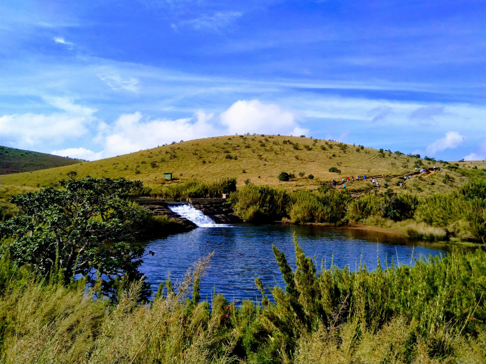

About the Department

The Department of Wildlife Conservation (DWC) in Sri Lanka, operating under the Ministry of Environment, is at the forefront of wildlife and biodiversity preservation. Charged with the formulation and execution of policies, it oversees the management of national parks, wildlife reserves, and sanctuaries. The DWC conducts vital research, monitors ecosystem health, and enforces wildlife laws to combat illicit activities. Additionally, it actively engages local communities in conservation initiatives, fostering a holistic and sustainable approach. It is advisable to consult official channels for the latest updates on the DWC's initiatives and organizational structure.
Protected Areas


Location
Importance of Wild Life Department
The Department of Wildlife Conservation (DWC) in Sri Lanka is a non-ministerial government department responsible for maintaining national parks, nature reserves, and wildlife in wilderness areas in the country. Established in October 1949, the department's primary goal is to conserve wildlife and nature through the sustainable utilization of men, material, and land by means of participatory management, research, education, and law enforcement. The department is responsible for ensuring the maintenance of biodiversity and forest cover as they exist today.
- The department is responsible for managing a network of wildlife reservations, which consist of reservations declared under various reservation levels.
- The sources of water feeding all the main reservoirs in Sri Lanka and catchment areas of 40 major rivers fall under the department's jurisdiction.
- The department is involved in various research projects, such as the "Multi-Point Identification Approach for the Recognition of Individual Leopards (Panthera pardus kotiya)"
- The department has declared several national parks in Sri Lanka on wildlife sanctuaries and parks under their management.
- The head of the department is the Director General of Wildlife Conservation, formally known as Warden.
- The department's headquarters is located in Battaramulla, Sri Lanka.